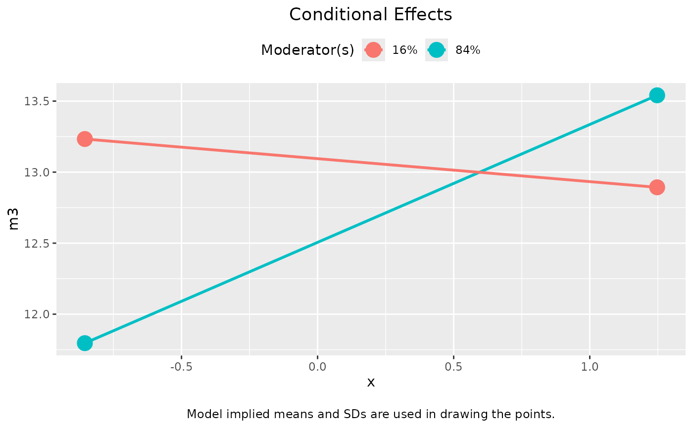
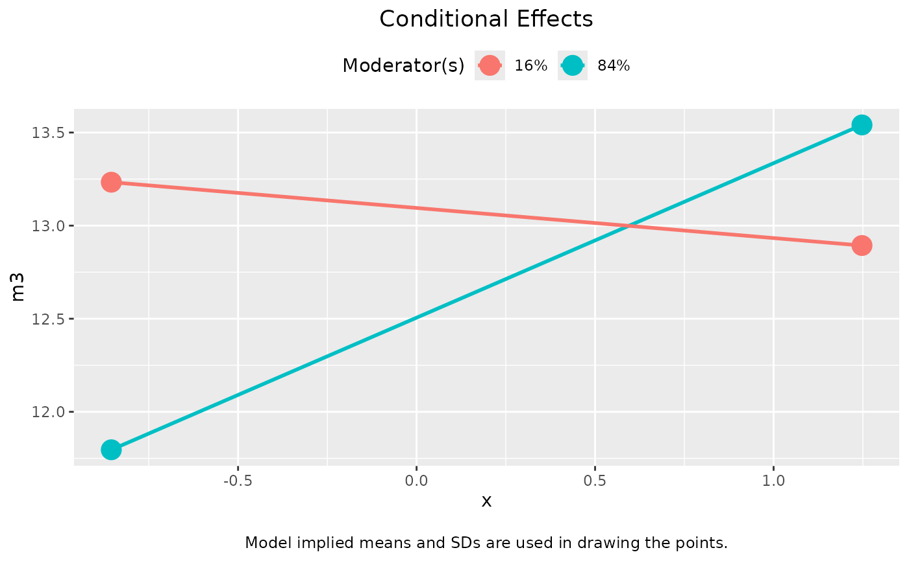

Plot the conditional total effects for different levels of moderators.
Usage
# S3 method for cond_indirect_effects
plot(
x,
x_label,
w_label = "Moderator(s)",
y_label,
title,
x_from_mean_in_sd = 1,
x_method = c("sd", "percentile"),
x_percentiles = c(0.16, 0.84),
x_sd_to_percentiles = NA,
note_standardized = TRUE,
no_title = FALSE,
line_width = 1,
point_size = 5,
graph_type = c("default", "tumble"),
...
)Arguments
- x
The output of
cond_indirect_effects(). (Namedxbecause it is required in the naming of arguments of theplotgeneric function.)- x_label
The label for the X-axis. Default is the value of the predictor in the output of
cond_indirect_effects().- w_label
The label for the legend for the lines. Default is
"Moderator(s)".- y_label
The label for the Y-axis. Default is the name of the response variable in the model.
- title
The title of the graph. If not supplied, it will be generated from the variable names or labels (in
x_label,y_label, andw_label). If"", no title will be printed. This can be used when the plot is for manuscript submission and figures are required to have no titles.- x_from_mean_in_sd
How many SD from mean is used to define "low" and "high" for the focal variable. Default is 1.
- x_method
How to define "high" and "low" for the focal variable levels. Default is in terms of the standard deviation of the focal variable,
"sd". If equal to"percentile", then the percentiles of the focal variable in the dataset is used.- x_percentiles
If
x_methodis"percentile", then this argument specifies the two percentiles to be used, divided by 100. It must be a vector of two numbers. The default isc(.16, .84), the 16th and 84th percentiles, which corresponds approximately to one SD below and above mean for a normal distribution, respectively.- x_sd_to_percentiles
If
x_methodis"percentile"and this argument is set to a number, this number will be used to determine the percentiles to be used. The lower percentile is the percentile in a normal distribution that isx_sd_to_percentilesSD below the mean. The upper percentile is the percentile in a normal distribution that isx_sd_to_percentilesSD above the mean. Therefore, ifx_sd_to_percentilesis set to 1, then the lower and upper percentiles are 16th and 84th, respectively. Default isNA.- note_standardized
If
TRUE, will check whether a variable has SD nearly equal to one. If yes, will report this in the plot. Default isTRUE.- no_title
If
TRUE, title will be suppressed. Default isFALSE.- line_width
The width of the lines as used in
ggplot2::geom_segment(). Default is 1.- point_size
The size of the points as used in
ggplot2::geom_point(). Default is 5.- graph_type
If
"default", the typical line-graph with equal end-points will be plotted. If"tubmle", then the tumble graph proposed by Bodner (2016) will be plotted. Default is"default".- ...
Additional arguments. Ignored.
Value
A ggplot2 graph. Plotted if not assigned to a name. It can be further modified like a usual ggplot2 graph.
Details
This function is a plot method of the output
of cond_indirect_effects(). It will use the levels of moderators
in the output.
It plots the total effect from x to y in a model for
different levels of the moderators.
If x has only one path to y and there is no
mediator along this path, then it plots the conditional (simple)
effect of x on y.
If x has one and only one path to y and there is one or more
mediators along this path, then it plots the conditional
indirect effect along this path.
If x has more than one path to y, for example, x
has a direct path to y, then it plots the
conditional total effect from x to y.
References
Bodner, T. E. (2016). Tumble graphs: Avoiding misleading end point extrapolation when graphing interactions from a moderated multiple regression analysis. Journal of Educational and Behavioral Statistics, 41(6), 593-604. doi:10.3102/1076998616657080
Examples
library(lavaan)
dat <- modmed_x1m3w4y1
n <- nrow(dat)
set.seed(860314)
dat$gp <- sample(c("gp1", "gp2", "gp3"), n, replace = TRUE)
dat <- cbind(dat, factor2var(dat$gp, prefix = "gp", add_rownames = FALSE))
# lavaan
mod <-
"
m3 ~ m1 + x + gpgp2 + gpgp3 + x:gpgp2 + x:gpgp3
y ~ m2 + m3 + x + w4 + x:w4
"
fit <- sem(mod, dat, meanstructure = TRUE, fixed.x = FALSE)
out_mm_1 <- mod_levels_list("w4", c("gpgp2", "gpgp3"),
sd_from_mean = c(-1, 1),
fit = fit, merge = TRUE)
out_1 <- cond_indirect_effects(wlevels = out_mm_1, x = "x", y = "y", m = "m3", fit = fit)
plot(out_1)
 plot(out_1, graph_type = "tumble")
plot(out_1, graph_type = "tumble")
 # Regression
lm_m3 <- lm(m3 ~ m1 + x*gp, dat)
lm_y <- lm(y ~ m2 + m3 + x*w4, dat)
fit_lm <- lm2list(lm_m3, lm_y)
out_mm_1_lm <- mod_levels_list("w4", c("gpgp2", "gpgp3"),
sd_from_mean = c(-1, 1),
fit = fit_lm, merge = TRUE)
out_1_lm <- cond_indirect_effects(wlevels = out_mm_1_lm, x = "x", y = "y", m = "m3", fit = fit_lm)
plot(out_1_lm)

plot(out_1_lm, graph_type = "tumble")
# Regression
lm_m3 <- lm(m3 ~ m1 + x*gp, dat)
lm_y <- lm(y ~ m2 + m3 + x*w4, dat)
fit_lm <- lm2list(lm_m3, lm_y)
out_mm_1_lm <- mod_levels_list("w4", c("gpgp2", "gpgp3"),
sd_from_mean = c(-1, 1),
fit = fit_lm, merge = TRUE)
out_1_lm <- cond_indirect_effects(wlevels = out_mm_1_lm, x = "x", y = "y", m = "m3", fit = fit_lm)
plot(out_1_lm)

plot(out_1_lm, graph_type = "tumble")